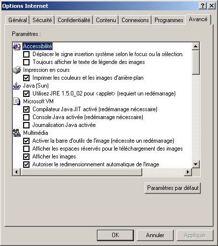
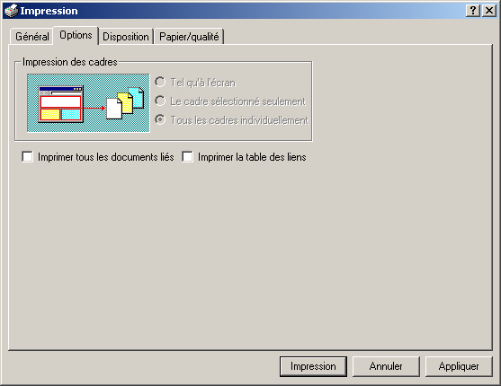
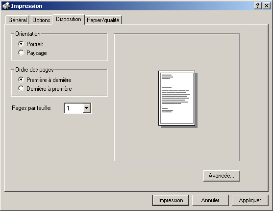

Les organigrammes dans Ovidentia
L'impression
L'impression de l'organigramme demande quelques ajustements afin de s'assurer que le contenu imprimé sera bien cadré.
Certains navigateurs comme Internet Explorer ou Firefox peuvent restreindre des options d'impression.
Voici par exemple le paramétrage obligatoire avec Internet Explorer :
--> Dans le navigateur, menu Outils et Options Internet puis onglet Avancé :
Afin d'imprimer les cadres des entités ainsi que les photos des responsables dans l'organigramme,
l'option "Imprimer les couleurs et les images arrière-plan" doit être cochée.

Option "Imprimer les couleurs et les arrière-plan"
--> Dans les options d'impression, onglet Options :
Il est possible de choisir le cadre de la page qui sera imprimé.
L'impression de tous les cadres est inutile si l'objectif est d'imprimer uniquement l'organigramme
(donc sans les informations de gauche relatives à une entité)

Option d'impression des cadres
--> Dans les options d'impression, onglet Disposition :
Vous pouvez choisir l'orientation de votre page, le mode Paysage étant préféré pour l'impression de l'organigramme.

Option d'orientation de la page